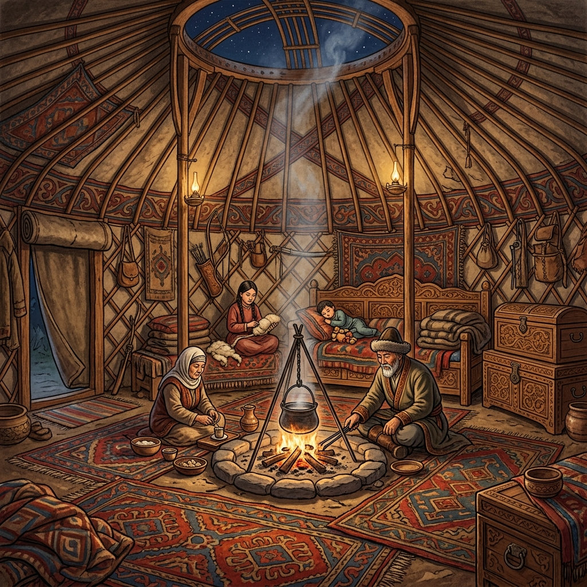

Konargöçer Yaşam Keşfi
Türklerin konargöçer yaşam biçimini altı aşamalı interaktif bir modülle keşfedin.
Kaynak Sınıflandırma
Her kaynağı birinci el veya ikinci el olarak sınıflandırın.


Özellik Eşleştirme
Konargöçer yaşamın temel özelliklerini açıklamalarıyla eşleştirin.
Neden-Sonuç İlişkisi
Konargöçer yaşamın tarihi nedenlerini inceleyin ve ortaya çıkan doğru sonuçları belirleyin.
Dönem Koşulları
Bu özellikler konargöçer Türklere uygun mu? Dönemin koşullarını değerlendirin.

Geçmiş ve Günümüz
Bu ögeler geçmişe mi, günümüze mi yoksa her ikisine mi ait?
Değer Seçimi
Konargöçer yaşamı en iyi tanımlayan üç değeri seçin.

Keşfinizi Tamamladınız!
Konargöçer Türk yaşamının tarihi, kültürel ve sosyal boyutlarını içeren tüm aşamaları başarıyla incelediniz.
Öğrenme Özeti
Harika bir öğrenme yolculuğu gerçekleştirdiniz! İlettiğiniz cevaplarla Tariat Kitabesi'nden Sarıkeçili Yörüklerine uzanan konargöçer kültürün temel öğelerini pekiştirdiniz.